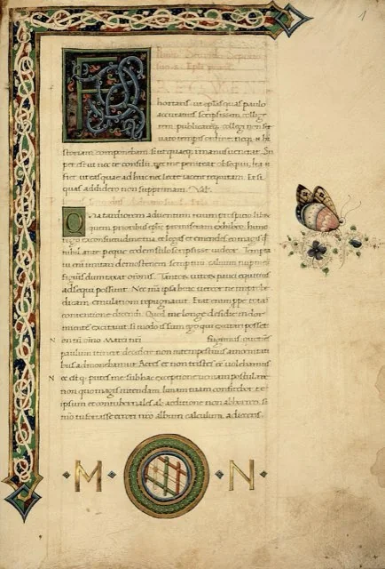
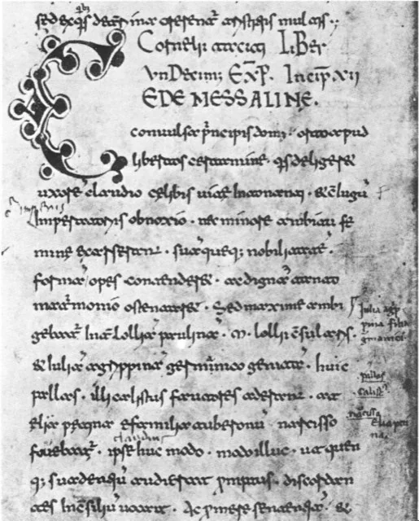
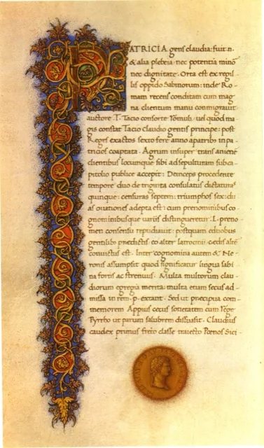
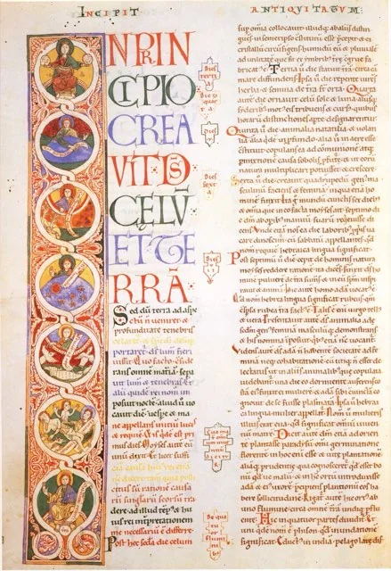
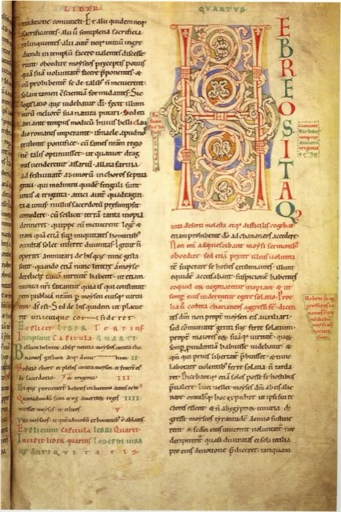
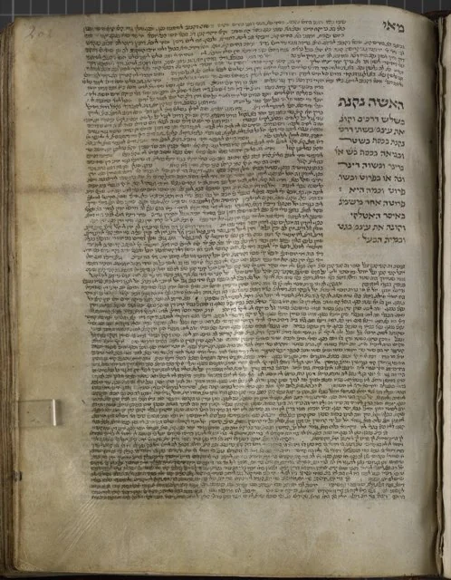

Roman writers
6 writings-

AD 112c. AD 111–112Pliny the Younger and Trajan, Letters 10.96–97: on the trials of Christians
Pliny the Younger and the Emperor Trajan
A Roman governor’s report to the emperor on the Christians of Bithynia-Pontus: their dawn meetings, a hymn ‘to Christ, as though he were a god’, their oath and shared meal, and Trajan’s rule that they are not to be hunted out.
→ -

AD 116c. AD 115–117Tacitus, Annals 15.38–44: the Great Fire and Nero’s punishment of the Christians
Publius Cornelius Tacitus
The Roman historian’s account of the fire of AD 64, after which Nero blamed and cruelly executed the Christians. Tacitus explains that their founder Christus was executed under Tiberius by the procurator Pontius Pilate.
→ -

AD 120c. AD 120Suetonius, Life of Claudius 25: the expulsion over “Chrestus”
Gaius Suetonius Tranquillus
In a list of Claudius’s measures, Suetonius says he expelled from Rome the Jews who were constantly rioting ‘at the instigation of Chrestus’. Many historians see a garbled reference to Christ; others think of an unknown agitator, a question left to your discernment.
→ -
 AD 125c. AD 124–125
AD 125c. AD 124–125
Hadrian’s Rescript to Minucius Fundanus (Eusebius, Church History 4.9)
Emperor Hadrian (preserved by Justin Martyr and Eusebius)
An imperial ruling to the proconsul of Asia: Christians may be prosecuted only by formal accusation in court and convicted of acting against the laws, and false accusers are to be punished. Many historians accept it as genuine; its exact meaning is weighed here.
→ -
 AD 165c. AD 165
AD 165c. AD 165
Lucian of Samosata, The Passing of Peregrinus
Lucian of Samosata
A Greek satirist’s account of the Cynic Peregrinus, who burned himself at Olympia in 165. In passing it describes Christians who worship ‘the crucified sage’ of Palestine, live by his laws and care for their imprisoned members.
→ -
 AD 221c. AD 221 (Africanus); Thallus earlier, date disputed
AD 221c. AD 221 (Africanus); Thallus earlier, date disputed
Julius Africanus on Thallus and Phlegon: the darkness at the crucifixion
Sextus Julius Africanus (citing Thallus and Phlegon)
A fragment of Julius Africanus’s lost Chronography. He says Thallus explained the darkness at the crucifixion as an eclipse, objects that no eclipse is possible at Passover full moon, and cites Phlegon’s report of an eclipse under Tiberius.
→
Jewish sources
3 writings-

AD 93c. AD 93–94Josephus, Jewish Antiquities, Book 18: the Testimonium Flavianum and John the Baptist
Flavius Josephus
The Jewish historian Josephus’s passage on Jesus (Ant. 18.63–64), widely judged to be an authentic notice later expanded by Christian copyists, with his account of John the Baptist and Pilate’s governorship as context.
→ -

AD 93c. AD 93–94Josephus, Jewish Antiquities, Book 20: the death of James, brother of Jesus
Flavius Josephus
Josephus reports that the high priest Ananus had ‘the brother of Jesus who was called Christ, whose name was James’ stoned in AD 62. Most scholars accept the passage as authentic, making it a key non-Christian reference to Jesus.
→ -

AD 550Redacted c. AD 500–600; the baraita is presented as earlier traditionBabylonian Talmud, Sanhedrin 43a: the baraita on Yeshu
Babylonian Talmud (rabbinic tradition)
A Talmudic tradition that Yeshu (rendered ‘Jesus the Nazarene’) was hanged on Passover eve for sorcery and leading Israel astray after a herald sought defenders for forty days. Whether it preserves an independent memory of Jesus is an open question for your discernment.
→